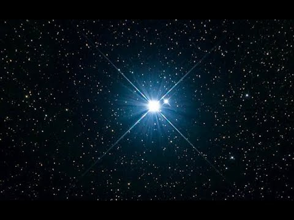
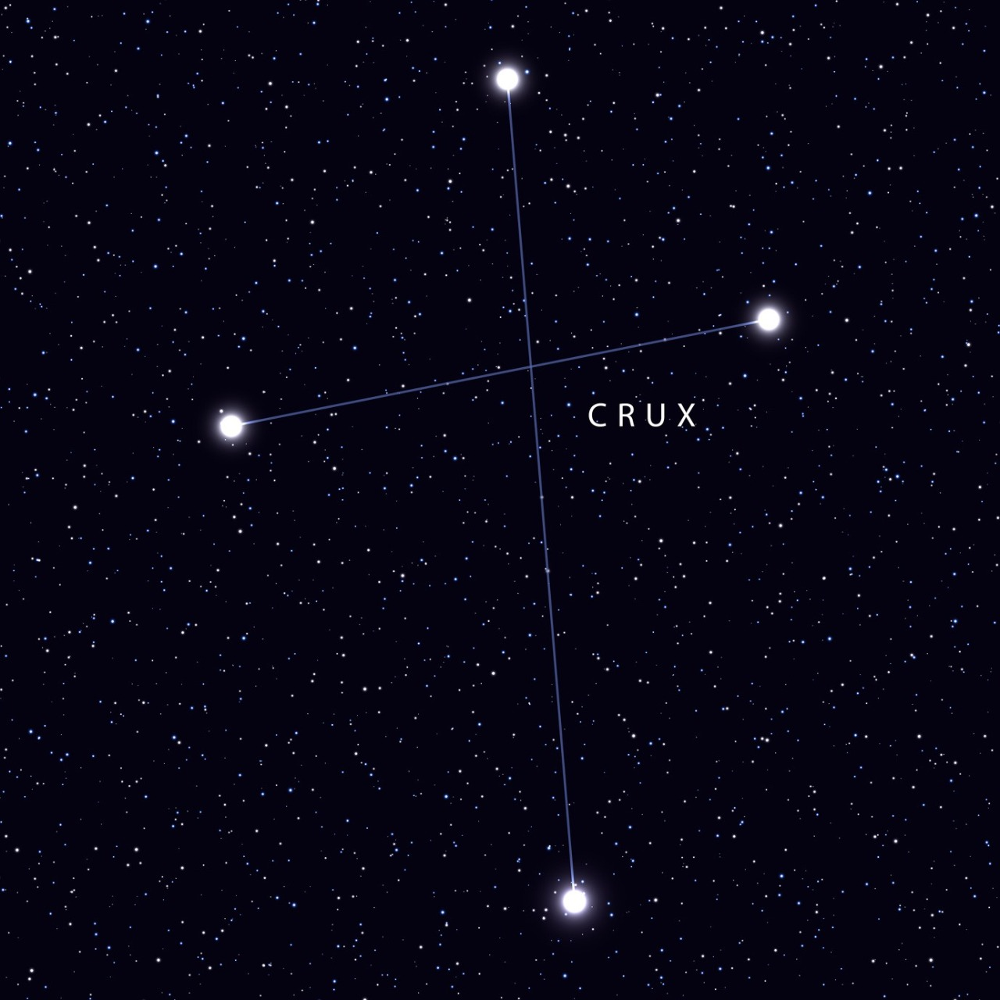

Acrux

Alpha Crucis, conhecida como Acrux e Estrela de Magalhães, é a estrela mais brilhante da constelação de Crux.
Com uma magnitude aparente combinada de cerca de 0,8, é também a 13ª estrela mais brilhante do céu. De acordo
com sua paralaxe, está localizada a aproximadamente 320 anos-luz da Terra.
Uma destacada estrela branca do hemisfério sul que é a mais brilhante da constelação de Crux, ou Cruzeiro do Sul,
por isso também denominada Alpha Crucis. É uma estrela binária visual, com uma separação angular de 4 segundos de arco,
onde ambas as componentes são binárias espetroscópicas.

Constelação muito fácil de se localizar por, apesar de ser a mais pequena de
todas as constelações oficiais, apresentar um formato bastante óbvio, desenhado por estrelas
brilhantes, o Cruzeiro do Sul é reconhecido no céu desde há muitos séculos atrás por várias culturas
ancestrais do hemisfério Sul.
Sendo a constelação meridional mais famosa, o Cruzeiro do Sul
aparece nas bandeiras de diversas nações. A sua forma característica foi um
marco para a navegação durante séculos, pois o extremo superior da cruz aponta o
caminho para o Polo Sul celeste.
Devido à sua distância esta constelação só passou a figurar nos mapas como
entidade separada a partir de 1952, tendo até aí feito parte de Centauro.
O Cruzeiro do Sul contém o par de opostas mais impressionante (designadas por
Caixa de Jóias e Saco de Carvão) cravadas na Via Láctea meridional.
Desenvolvedoras:
MARIA LUIZA GONÇALVES PEREIRA
NICOLY RILLARY BRITO DA SILVA